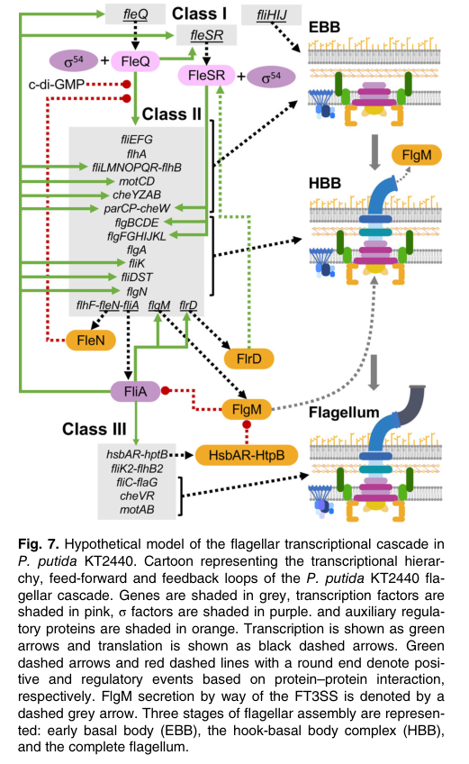

FliC is the flagellin subunit that polymerizes into the extracellular filament of the polar bacterial-type flagellum in Pseudomonas putida KT2440. Its core role is structural rather than enzymatic, providing the propeller-like filament required for bacterial-type flagellum-dependent motility.
Definition: The action of a molecule that contributes to the structural integrity of the bacterial-type flagellum filament, the external propeller of the bacterial-type flagellum assembled primarily from flagellin subunits.
Justification: GO currently offers the generic molecular function term structural molecule activity and the cellular component term bacterial-type flagellum filament, but lacks a flagellin-specific structural constituent molecular function term.
Parent term: structural molecule activity
Supporting Evidence:
| GO Term | Evidence | Action | Reason |
|---|---|---|---|
|
GO:0005198
structural molecule activity
|
IEA
GO_REF:0000120 |
ACCEPT |
Summary: This is the best current molecular function term for FliC. FliC is a structural flagellin subunit rather than an enzyme, and GO does not currently provide a more specific molecular function term for structural constituent of the bacterial-type flagellum filament.
Supporting Evidence:
file:PSEPK/fliC/fliC-notes.md
GO currently lacks an MF term equivalent to "structural constituent of bacterial-type flagellum filament", so `GO:0005198` structural molecule activity is the best available molecular function term.
file:PSEPK/fliC/fliC-deep-research-falcon.md
**FliC is a structural protein (not an enzyme/transport protein):** it polymerizes to form the **flagellar filament**, enabling propulsion during swimming.
file:PSEPK/fliC/fliC-deep-research-falcon.md
A KT2440 study discussing flagellar regulation explicitly identifies **fliC as encoding the major flagellin subunit** and positions its expression among the late flagellar genes requiring FliA/σ\28.
|
|
GO:0005576
extracellular region
|
IEA
GO_REF:0000044 |
MODIFY |
Summary: This annotation is too broad for mature FliC. Although the assembled filament is extracellular, FliC is not best described as a generic extracellular protein; the biologically meaningful location is the bacterial-type flagellum filament.
Proposed replacements:
bacterial-type flagellum filament
Supporting Evidence:
file:PSEPK/fliC/fliC-notes.md
For GO curation, `GO:0005576` extracellular region is too broad for mature FliC because the biologically relevant location is the assembled flagellar filament rather than generic extracellular space.
file:PSEPK/fliC/fliC-deep-research-falcon.md
The filament is described as “a long and thin helical appendage that protrudes from the cells,” placing FliC in an **extracellular, surface-exposed polymer** attached to the flagellar basal body/hook.
file:PSEPK/fliC/fliC-deep-research-falcon.md
Mechanistically, FliC is exported via the fT3SS to the growing tip after cap assembly, consistent with extracellular polymerization.
|
|
GO:0009288
bacterial-type flagellum
|
IEA
GO_REF:0000120 |
ACCEPT |
Summary: Correct high-level cellular component annotation. FliC is a core structural part of the bacterial-type flagellum, although the more precise child term GO:0009420 bacterial-type flagellum filament better captures the specific substructure built from flagellin monomers.
Supporting Evidence:
file:PSEPK/fliC/fliC-notes.md
For GO curation, `GO:0009288` bacterial-type flagellum is correct but `GO:0009420` bacterial-type flagellum filament is the more precise location term for a flagellin monomer assembled into the filament.
file:PSEPK/fliC/fliC-deep-research-falcon.md
The filament is described as “a long and thin helical appendage that protrudes from the cells,” placing FliC in an **extracellular, surface-exposed polymer** attached to the flagellar basal body/hook.
|
|
GO:0071973
bacterial-type flagellum-dependent cell motility
|
IEA | NEW |
Summary: This process term captures the main biological context of FliC. As the polymerizing flagellin subunit of the filament, FliC contributes directly to the propeller structure required for bacterial-type flagellum-dependent motility.
Reason: Existing GOA lacks a biological process annotation for the core motility role of the flagellar filament.
Supporting Evidence:
file:PSEPK/fliC/fliC-notes.md
FliC supports bacterial-type flagellum-dependent cell motility because the flagellar filament is the propeller of the bacterial-type flagellum and FliC is its polymerizing subunit.
file:PSEPK/fliC/fliC-notes.md
In KT2440, deletion of a large flagellar region produced a strain that "lacked the protruding polar cords that define flagella in the wild-type P. putida strain and was unable of any swimming motility", supporting bacterial-type flagellum-dependent cell motility as the relevant process context, although this evidence is system-level rather than `fliC`-specific.
file:PSEPK/fliC/fliC-deep-research-falcon.md
**FliC is a structural protein (not an enzyme/transport protein):** it polymerizes to form the **flagellar filament**, enabling propulsion during swimming.
|
Q: Does FliC have any experimentally supported role in surface sensing or biofilm initiation in KT2440 beyond being the filament structural subunit?
Q: Are there condition-specific mechanisms that alter FliC export or filament abundance during transitions between planktonic and sessile growth?
Experiment: Construct an in-frame fliC deletion and complementation strain in KT2440, then quantify swimming/swarming motility and visualize filament formation by electron microscopy.
Hypothesis: FliC is required to assemble the flagellar filament and thereby support bacterial-type flagellum-dependent motility.
Type: targeted mutant phenotype analysis
Experiment: Measure secreted and polymerized FliC across planktonic, surface-associated, and oxidative-stress conditions using immunoblotting or quantitative proteomics.
Hypothesis: FliC abundance and export are conditionally regulated during the motile-to-sessile transition.
Type: protein localization and abundance profiling
The research report should be a detailed narrative explaining the function, biological processes, and localization of the gene product. Citations should be given for all claims.
You should prioritize authoritative reviews and primary scientific literature when conducting research. You can supplement
this with annotations you find in gene/protein databases, but these can be outdated or inaccurate.
We are specifically interested in the primary function of the gene - for enzymes, what reaction is catalyzed, and what is the substrate specificity? For transporters, what is the substrate? For structural proteins or adapters, what is the broader structural role? For signaling molecules, what is the role in the pathway.
We are interested in where in or outside the cell the gene product carries out its function.
We are also interested in the signaling or biochemical pathways in which the gene functions. We are less interested in broad pleiotropic effects, except where these elucidate the precise role.
Include evidence where possible. We are interested in both experimental evidence as well as inference from structure, evolution, or bioinformatic analysis. Precise studies should be prioritized over high-throughput, where available.
Target provided: UniProt Q88ES5, gene fliC, product Flagellin, organism Pseudomonas putida KT2440.
Verification against literature retrieved here
1. Gene symbol ↔ protein description match: In Pseudomonas (including P. putida KT2440), fliC is consistently used for the major flagellin (filament) subunit; e.g., KT2440 flagellar regulation papers explicitly state that fliC encodes the major flagellin subunit. (xiao2017expressionofthe pages 1-2)
2. Organism match: KT2440-specific regulatory studies explicitly analyze the P. putida KT2440 flagellar cluster and regulation, and place fliC within the KT2440 flagellar cluster/operons, consistent with the provided locus context. (leal‐morales2022transcriptionalorganizationand pages 1-1, leal‐morales2022transcriptionalorganizationand media d3e84020)
3. Family/domain alignment: While the retrieved primary papers do not enumerate InterPro accessions, they describe fliC/flagellin as the filament subunit and exported structural protein, consistent with membership in the bacterial flagellin family (as in the UniProt-provided domain context). (leal‐morales2022transcriptionalorganizationand pages 1-1, bouteiller2021pseudomonasflagellageneralities pages 9-11)
Conclusion: The literature evidence in this corpus is consistent with UniProt Q88ES5 being the flagellin/filament subunit FliC of P. putida KT2440, and no conflicting fliC meaning was encountered in KT2440-specific sources. (leal‐morales2022transcriptionalorganizationand pages 1-1, xiao2017expressionofthe pages 1-2)
Flagellin is the principal repeating protein subunit of the flagellar filament, the long helical extracellular appendage that functions as the propeller of bacterial swimming motility. (leal‐morales2022transcriptionalorganizationand pages 1-1)
In Pseudomonas, filament construction follows export of a filament cap (FliD); then FliC is exported through the flagellar type III secretion system (fT3SS) with its chaperone (FliS) to enable filament extension. (bouteiller2021pseudomonasflagellageneralities pages 9-11)
Flagellar biogenesis is typically regulated by a temporal transcriptional hierarchy aligned with assembly order. In Pseudomonas putida KT2440, a genome region (“flagellar cluster”) contains dozens of genes (59 in the cluster analyzed) organized into operons and promoters governing assembly and function. (leal‐morales2022transcriptionalorganizationand pages 1-1)
A KT2440-focused analysis supports a cascade in which a master regulator (FleQ) and σ\N (RpoN/σ54) drive early/middle flagellar genes, including regulatory nodes, culminating in activation of late genes by σ\28 (FliA) that enable filament (flagellin) synthesis. (leal‐morales2022transcriptionalorganizationand pages 1-1, leal‐morales2022transcriptionalorganizationand media d3e84020)
A conserved checkpoint mechanism delays expression of late filament genes: the anti-sigma factor FlgM sequesters FliA until the hook-basal body is assembled; completion triggers FlgM export and release of FliA-dependent transcription of late genes such as fliC. (bouteiller2021pseudomonasflagellageneralities pages 9-11, oladosu2024fliptheswitch pages 3-4)
FliC is a structural protein (not an enzyme/transport protein): it polymerizes to form the flagellar filament, enabling propulsion during swimming. (leal‐morales2022transcriptionalorganizationand pages 1-1, bouteiller2021pseudomonasflagellageneralities pages 9-11)
A KT2440 study discussing flagellar regulation explicitly identifies fliC as encoding the major flagellin subunit and positions its expression among the late flagellar genes requiring FliA/σ\28. (xiao2017expressionofthe pages 1-2)
Motility/chemotaxis: In KT2440, regulatory work describes that FliA activation of late genes enables synthesis of the filament and supports completion of the chemotaxis apparatus, linking filament synthesis (and thus fliC expression) to functional motility and chemotactic behavior. (leal‐morales2022transcriptionalorganizationand pages 1-1)
Lifestyle transitions: In Pseudomonas, flagellar gene regulation is tightly intertwined with the transition between planktonic motility and sessile/biofilm states through regulators like FleQ and the second messenger c-di-GMP. (blancoromero2018genomewideanalysisof pages 4-5, oladosu2024fliptheswitch pages 4-7)
The filament is described as “a long and thin helical appendage that protrudes from the cells,” placing FliC in an extracellular, surface-exposed polymer attached to the flagellar basal body/hook. (leal‐morales2022transcriptionalorganizationand pages 1-1)
Mechanistically, FliC is exported via the fT3SS to the growing tip after cap assembly, consistent with extracellular polymerization. (bouteiller2021pseudomonasflagellageneralities pages 9-11)
A KT2440 flagellar-cluster map places fliC in an operon annotated as fliC–flaG–fliDST–fleQSR, integrating the filament gene with regulatory components in the same cluster architecture. (leal‐morales2022transcriptionalorganizationand media d3e84020)
A KT2440 regulatory model figure summarizes a cascade where:
- FleQ (master regulator) and σ\54/RpoN activate early/middle genes (including regulatory nodes such as FliA).
- FliA (σ\28) activates late genes, including fliC, enabling filament synthesis. (leal‐morales2022transcriptionalorganizationand pages 1-1, leal‐morales2022transcriptionalorganizationand media d3e84020)
KT2440 experimental work on motility regulation reiterates that FliA is required for transcription of late flagellar genes including fliC. (xiao2017expressionofthe pages 1-2)
A ChIP-seq-based genome-wide analysis of FleQ binding and regulation in KT2440 reports that FleQ is bifunctional and activates genes implicated in motility and adhesion, explicitly including fliC (and lapA), while repressing exopolysaccharide-associated genes. (blancoromero2018genomewideanalysisof pages 4-5)
This provides direct evidence that fliC is under FleQ-dependent transcriptional control in P. putida KT2440. (blancoromero2018genomewideanalysisof pages 4-5)
KT2440 evidence for coupling between flagellar σ-factor and c-di-GMP: In KT2440, deletion of fliA caused an ~twofold decrease in transcription of the phosphodiesterase gene bifA, and FliA overexpression decreased intracellular c-di-GMP in a BifA-dependent manner and enhanced swimming. (xiao2017expressionofthe pages 1-2)
Because fliC is a canonical late gene requiring FliA, this establishes an organism-specific regulatory connection by which the late flagellar program (including filament synthesis) is coupled to c-di-GMP dynamics and motility. (xiao2017expressionofthe pages 1-2)
2024 mechanistic review (authoritative synthesis, mainly P. aeruginosa but generalized to Pseudomonas): FleQ is an AAA+ ATPase enhancer-binding protein that activates σ\54-dependent flagellar genes; c-di-GMP binding obstructs the ATP-binding pocket and allosterically inhibits FleQ ATPase activity, repressing flagellar transcription and favoring biofilm matrix gene expression at high c-di-GMP. (oladosu2024fliptheswitch pages 9-11)
This mechanism provides a current expert framework for interpreting how KT2440 FleQ can coordinate motility genes such as fliC with biofilm-associated transcriptional programs. (oladosu2024fliptheswitch pages 4-7, oladosu2024fliptheswitch pages 9-11)
A 2024 Journal of Bacteriology minireview synthesizes evidence that FleQ can act as both activator and repressor and that its promoter-binding configurations and sigma-factor dependencies (σ\54 for flagella; σ\70-like promoters for some matrix genes) allow inverse regulation of flagella genes (including class IV outputs like fliC via FliA) and biofilm genes, depending on c-di-GMP. (oladosu2024fliptheswitch pages 3-4, oladosu2024fliptheswitch pages 4-7)
Although this review focuses on P. aeruginosa, it explicitly frames the mechanism as relevant across Pseudomonas (including P. putida), and it provides up-to-date expert interpretation of how upstream regulators modulate late filament/flagellin expression indirectly through the cascade. (oladosu2024fliptheswitch pages 1-3)
A 2024 eLife study identifies FipA as a conserved determinant required for normal FlhF function and polar flagellum formation, including in P. putida. In P. putida, loss of fipA phenocopies loss of flhF by greatly reducing flagellum number, linking polar flagellar biogenesis to a conserved licensing factor upstream of filament assembly (and thus upstream of fliC’s structural role). (arroyoperez2024aconservedcellpole pages 14-15)
This represents a recent advance in understanding how P. putida coordinates polar flagellum biogenesis, providing context for when and where filament proteins like FliC will be assembled (i.e., at the designated pole). (arroyoperez2024aconservedcellpole pages 14-15)
A 2023 primary study in Microbiology Spectrum shows that in some plant-associated Pseudomonas (e.g., Pseudomonas kilonensis F113), duplicated flagellins can diverge such that only one contributes to motility and plant immune elicitation. (luo2023duplicatedflagellinsin pages 8-10)
The same work provides quantitative, modern examples of flagellin-derived epitope function: predicted binding stability changes (ΔΔGbind) for Flg22 peptides differed markedly (e.g., Flg22-1 vs Flg22-2), providing a framework for how sequence variation in flagellin N-termini can alter host pattern-recognition outcomes. (luo2023duplicatedflagellinsin pages 8-10)
While not KT2440-specific, this 2023 work is directly relevant for interpreting potential ecological/host-interaction consequences of flagellin sequence variation in environmental Pseudomonas like KT2440. (luo2023duplicatedflagellinsin pages 8-10)
A KT2440/F113 comparative ChIP-seq study motivates flagellar gene regulation as central to competitiveness and colonization in the rhizosphere and identifies FleQ as a master regulator controlling motility and adhesion genes, including fliC. (blancoromero2018genomewideanalysisof pages 4-5)
This positions fliC-mediated motility as a trait likely important in soil/plant-associated contexts where Pseudomonas strains are deployed or studied (e.g., for colonization/competitiveness), even if the paper’s primary outputs are regulatory rather than field trials. (blancoromero2018genomewideanalysisof pages 4-5)
Because FleQ integrates c-di-GMP signals to inversely regulate flagella and matrix genes, the 2024 synthesis suggests rational levers for shifting populations between motile and sessile states by manipulating c-di-GMP or FleQ’s activity state. (oladosu2024fliptheswitch pages 4-7, oladosu2024fliptheswitch pages 9-11)
In KT2440 specifically, the demonstrated FliA→BifA→c-di-GMP link provides an experimentally supported route by which late flagellar regulation can feed back on a global second messenger known to control motility vs biofilm behaviors. (xiao2017expressionofthe pages 1-2)
Structural/organizational statistics
- A Pseudomonas flagella review reports that a filament can contain ~20,000 flagellin subunits. (bouteiller2021pseudomonasflagellageneralities pages 11-12)
- The same review notes that some Pseudomonas putida strains can possess ~5–7 polar flagella (reported for P. putida PRS2000; KT2440 is also described as lophotrichous in KT2440 regulatory mapping). (leal‐morales2022transcriptionalorganizationand pages 2-2, bouteiller2021pseudomonasflagellageneralities pages 9-11)
Regulatory/phenotypic quantitative data (KT2440)
- In KT2440, FliA deletion caused an ~twofold decrease in bifA transcription (regulatory connection to c-di-GMP), and overexpression of FliA enhanced swimming in a BifA-dependent manner. (xiao2017expressionofthe pages 1-2)
Host recognition quantitative example (2023, non-KT2440 Pseudomonas)
- Predicted binding stability changes for Flg22 peptides differed strongly between two flagellins, illustrating potential functional divergence of flagellin epitopes (ΔΔGbind values reported in the study). (luo2023duplicatedflagellinsin pages 8-10)
The best-supported interpretation is that fliC (Q88ES5) encodes the polymerizing filament subunit whose primary role is mechanical propulsion, and that its expression is best understood as the terminal output of a multi-layer regulatory cascade integrating:
- assembly checkpoints (FlgM–FliA), (bouteiller2021pseudomonasflagellageneralities pages 9-11, oladosu2024fliptheswitch pages 3-4)
- master transcriptional control by FleQ with σ\54, (leal‐morales2022transcriptionalorganizationand pages 1-1, blancoromero2018genomewideanalysisof pages 11-12)
- modulation by c-di-GMP that biases the population between motility and biofilm programs. (oladosu2024fliptheswitch pages 4-7, oladosu2024fliptheswitch pages 9-11)
For KT2440 functional annotation, direct evidence supports regulation (FleQ, FliA) and biological role (filament for motility), whereas claims about host immune elicitation should be treated as inference from related Pseudomonas unless KT2440-specific flg22/FLS2 or TLR5 assays are consulted separately. (blancoromero2018genomewideanalysisof pages 4-5, luo2023duplicatedflagellinsin pages 8-10)
The following table consolidates KT2440-direct evidence and clearly marked cross-Pseudomonas inference, including URLs and quantitative facts.
| Annotation topic | Claim | Evidence summary | Key citation IDs | Paper citation (year, URL) |
|---|---|---|---|---|
| Protein identity / family / domains | Q88ES5 = FliC/flagellin of Pseudomonas putida KT2440 (PP_4378); member of the bacterial flagellin family with N- and C-terminal flagellin domains. | Identity is anchored by the user-provided UniProt record for Q88ES5/PP_4378 and is consistent with retrieved P. putida literature placing fliC in the filament gene set and in the late flagellar regulon; however, the specific InterPro domain calls were not directly re-reported in the retrieved papers. | (leal‐morales2022transcriptionalorganizationand pages 1-1, leal‐morales2022transcriptionalorganizationand media d3e84020) | Leal-Morales A, Pulido-Sánchez M, López-Sánchez A, Govantes F. Transcriptional organization and regulation of the Pseudomonas putida flagellar system (2022), https://doi.org/10.1111/1462-2920.15857 |
| Cellular localization / structure | FliC is the major structural subunit of the flagellar filament, an extracellular helical appendage that protrudes from the cell. | P. putida flagellar-system study defines the filament as a long, thin helical appendage protruding from cells and acting as a propeller; broader Pseudomonas review states FliC is exported by the flagellar type III secretion system with chaperone FliS to extend the filament after FliD cap assembly. | (leal‐morales2022transcriptionalorganizationand pages 1-1, bouteiller2021pseudomonasflagellageneralities pages 9-11) | Leal-Morales et al. (2022), https://doi.org/10.1111/1462-2920.15857; Bouteiller M et al. Pseudomonas Flagella: Generalities and Specificities (2021), https://doi.org/10.3390/ijms22073337 |
| Role in motility / chemotaxis | FliC provides the filament required for flagella-driven swimming, thereby contributing to motility and completion of the chemotaxis apparatus. | The KT2440 transcriptional map states FliA-driven late gene expression enables filament synthesis and completion of the chemotaxis apparatus; a KT2440-focused review/experimental context identifies fliC as the major flagellin subunit among class IV/late genes needed for motility. | (leal‐morales2022transcriptionalorganizationand pages 1-1, xiao2017expressionofthe pages 1-2) | Leal-Morales et al. (2022), https://doi.org/10.1111/1462-2920.15857; Xiao Y et al. Expression of the phosphodiesterase BifA facilitating swimming motility is partly controlled by FliA in Pseudomonas putida KT2440 (2017), https://doi.org/10.1002/mbo3.402 |
| Transcriptional regulation hierarchy | In KT2440, fliC belongs to the late filament operon and is regulated through the FleQ/σ54 → FleSR/FliA → FliA-dependent late genes hierarchy, with a FlgM checkpoint delaying late expression until hook-basal body completion. | Figure/model for KT2440 places the fliC-flaG-fliDST-fleQSR operon in the flagellar cluster and shows a three-tier cascade: FleQ with σ54 controls early genes and regulatory nodes; FliA activates late filament genes including fliC; broader mechanistic sources describe FlgM anti-sigma-factor control and secretion-dependent release of FliA activity. | (leal‐morales2022transcriptionalorganizationand media d3e84020, leal‐morales2022transcriptionalorganizationand pages 2-2, xiao2017expressionofthe pages 1-2, bouteiller2021pseudomonasflagellageneralities pages 9-11) | Leal-Morales et al. (2022), https://doi.org/10.1111/1462-2920.15857; Xiao et al. (2017), https://doi.org/10.1002/mbo3.402; Bouteiller et al. (2021), https://doi.org/10.3390/ijms22073337 |
| c-di-GMP / biofilm-transition links | Evidence suggests indirect coupling of fliC expression to the motile–sessile switch via FleQ/c-di-GMP and a FliA→BifA feedback axis. | FleQ ChIP-seq/regulon analysis in KT2440 identified fliC among motility genes activated by FleQ, and the study notes FleQ regulation is influenced by c-di-GMP; separately, in KT2440, fliA deletion caused an approximately twofold decrease in bifA transcription, and FliA overexpression decreased intracellular c-di-GMP in a BifA-dependent manner while enhancing swimming. This links the late flagellar sigma factor controlling fliC to c-di-GMP control, though not as a direct biochemical role of FliC itself. | (blancoromero2018genomewideanalysisof pages 4-5, xiao2017expressionofthe pages 1-2, xiao2017expressionofthe pages 2-4) | Blanco-Romero E et al. Genome-wide analysis of the FleQ direct regulon in Pseudomonas fluorescens F113 and Pseudomonas putida KT2440 (2018), https://doi.org/10.1038/s41598-018-31371-z; Xiao et al. (2017), https://doi.org/10.1002/mbo3.402 |
| Quantitative / statistical facts | Useful quantitative facts for annotation context: KT2440/related P. putida strains bear ~5–7 polar flagella; a filament contains ~20,000 FliC subunits; fliA deletion decreases bifA transcription ~2-fold; in a 2023 Pseudomonas flagellin study, predicted Flg22 binding energies differed strongly between two flagellins (Flg22-1: ΔΔGbind −0.59 kcal/mol to FLS2 and −1.12 kcal/mol to FLS2/BAK1; Flg22-2: 2.2 and 0.16 kcal/mol, respectively). | These numbers come from Pseudomonas flagella review (5–7 flagella; ~20,000 filament subunits), KT2440 BifA/FliA study (~2-fold), and a 2023 primary paper on duplicated Pseudomonas flagellins showing divergent plant immune elicitation. The Flg22 values are from a related Pseudomonas system, not KT2440-specific, but they are relevant to contemporary flagellin-function interpretation. | (bouteiller2021pseudomonasflagellageneralities pages 11-12, xiao2017expressionofthe pages 1-2, luo2023duplicatedflagellinsin pages 8-10) | Bouteiller et al. (2021), https://doi.org/10.3390/ijms22073337; Xiao et al. (2017), https://doi.org/10.1002/mbo3.402; Luo Y et al. Duplicated Flagellins in Pseudomonas Divergently Contribute to Motility and Plant Immune Elicitation (2023), https://doi.org/10.1128/spectrum.03621-22 |
Table: This table summarizes the most relevant functional-annotation evidence for Pseudomonas putida KT2440 fliC (UniProt Q88ES5/PP_4378), separating direct KT2440 evidence from broader Pseudomonas context. It is useful as a compact reference for identity, localization, regulation, and quantitative facts.
References
(xiao2017expressionofthe pages 1-2): Yujie Xiao, Huizhong Liu, Hailing Nie, Shan Xie, Xuesong Luo, Wenli Chen, and Qiaoyun Huang. Expression of the phosphodiesterase bifa facilitating swimming motility is partly controlled by flia in pseudomonas putida kt2440. MicrobiologyOpen, 6:e00402, Sep 2017. URL: https://doi.org/10.1002/mbo3.402, doi:10.1002/mbo3.402. This article has 16 citations and is from a peer-reviewed journal.
(leal‐morales2022transcriptionalorganizationand pages 1-1): Antonio Leal‐Morales, Marta Pulido‐Sánchez, Aroa López‐Sánchez, and Fernando Govantes. Transcriptional organization and regulation of the pseudomonas putida flagellar system. Environmental Microbiology, 24:137-157, Dec 2022. URL: https://doi.org/10.1111/1462-2920.15857, doi:10.1111/1462-2920.15857. This article has 31 citations and is from a domain leading peer-reviewed journal.
(leal‐morales2022transcriptionalorganizationand media d3e84020): Antonio Leal‐Morales, Marta Pulido‐Sánchez, Aroa López‐Sánchez, and Fernando Govantes. Transcriptional organization and regulation of the pseudomonas putida flagellar system. Environmental Microbiology, 24:137-157, Dec 2022. URL: https://doi.org/10.1111/1462-2920.15857, doi:10.1111/1462-2920.15857. This article has 31 citations and is from a domain leading peer-reviewed journal.
(bouteiller2021pseudomonasflagellageneralities pages 9-11): Mathilde Bouteiller, Charly Dupont, Yvann Bourigault, Xavier Latour, Corinne Barbey, Yoan Konto-Ghiorghi, and Annabelle Merieau. Pseudomonas flagella: generalities and specificities. International Journal of Molecular Sciences, 22:3337, Mar 2021. URL: https://doi.org/10.3390/ijms22073337, doi:10.3390/ijms22073337. This article has 147 citations.
(oladosu2024fliptheswitch pages 3-4): Victoria I. Oladosu, Soyoung Park, and Karin Sauer. Flip the switch: the role of fleq in modulating the transition between the free-living and sessile mode of growth in pseudomonas aeruginosa. Mar 2024. URL: https://doi.org/10.1128/jb.00365-23, doi:10.1128/jb.00365-23. This article has 27 citations and is from a peer-reviewed journal.
(blancoromero2018genomewideanalysisof pages 4-5): Esther Blanco-Romero, Miguel Redondo-Nieto, Francisco Martínez-Granero, Daniel Garrido-Sanz, Maria Isabel Ramos-González, Marta Martín, and Rafael Rivilla. Genome-wide analysis of the fleq direct regulon in pseudomonas fluorescens f113 and pseudomonas putida kt2440. Scientific Reports, Sep 2018. URL: https://doi.org/10.1038/s41598-018-31371-z, doi:10.1038/s41598-018-31371-z. This article has 64 citations and is from a peer-reviewed journal.
(oladosu2024fliptheswitch pages 4-7): Victoria I. Oladosu, Soyoung Park, and Karin Sauer. Flip the switch: the role of fleq in modulating the transition between the free-living and sessile mode of growth in pseudomonas aeruginosa. Mar 2024. URL: https://doi.org/10.1128/jb.00365-23, doi:10.1128/jb.00365-23. This article has 27 citations and is from a peer-reviewed journal.
(oladosu2024fliptheswitch pages 9-11): Victoria I. Oladosu, Soyoung Park, and Karin Sauer. Flip the switch: the role of fleq in modulating the transition between the free-living and sessile mode of growth in pseudomonas aeruginosa. Mar 2024. URL: https://doi.org/10.1128/jb.00365-23, doi:10.1128/jb.00365-23. This article has 27 citations and is from a peer-reviewed journal.
(oladosu2024fliptheswitch pages 1-3): Victoria I. Oladosu, Soyoung Park, and Karin Sauer. Flip the switch: the role of fleq in modulating the transition between the free-living and sessile mode of growth in pseudomonas aeruginosa. Mar 2024. URL: https://doi.org/10.1128/jb.00365-23, doi:10.1128/jb.00365-23. This article has 27 citations and is from a peer-reviewed journal.
(arroyoperez2024aconservedcellpole pages 14-15): Erick Eligio Arroyo-Pérez, John C. Hook, Alejandra Alvarado, Stephan Wimmi, Timo Glatter, K. Thormann, and S. Ringgaard. A conserved cell-pole determinant organizes proper polar flagellum formation. Dec 2024. URL: https://doi.org/10.7554/elife.93004.3, doi:10.7554/elife.93004.3. This article has 6 citations and is from a domain leading peer-reviewed journal.
(luo2023duplicatedflagellinsin pages 8-10): Yuan Luo, Jing Wang, Yi-Lin Gu, Li-Qun Zhang, and Hai-Lei Wei. Duplicated flagellins in pseudomonas divergently contribute to motility and plant immune elicitation. Feb 2023. URL: https://doi.org/10.1128/spectrum.03621-22, doi:10.1128/spectrum.03621-22. This article has 22 citations and is from a domain leading peer-reviewed journal.
(bouteiller2021pseudomonasflagellageneralities pages 11-12): Mathilde Bouteiller, Charly Dupont, Yvann Bourigault, Xavier Latour, Corinne Barbey, Yoan Konto-Ghiorghi, and Annabelle Merieau. Pseudomonas flagella: generalities and specificities. International Journal of Molecular Sciences, 22:3337, Mar 2021. URL: https://doi.org/10.3390/ijms22073337, doi:10.3390/ijms22073337. This article has 147 citations.
(leal‐morales2022transcriptionalorganizationand pages 2-2): Antonio Leal‐Morales, Marta Pulido‐Sánchez, Aroa López‐Sánchez, and Fernando Govantes. Transcriptional organization and regulation of the pseudomonas putida flagellar system. Environmental Microbiology, 24:137-157, Dec 2022. URL: https://doi.org/10.1111/1462-2920.15857, doi:10.1111/1462-2920.15857. This article has 31 citations and is from a domain leading peer-reviewed journal.
(blancoromero2018genomewideanalysisof pages 11-12): Esther Blanco-Romero, Miguel Redondo-Nieto, Francisco Martínez-Granero, Daniel Garrido-Sanz, Maria Isabel Ramos-González, Marta Martín, and Rafael Rivilla. Genome-wide analysis of the fleq direct regulon in pseudomonas fluorescens f113 and pseudomonas putida kt2440. Scientific Reports, Sep 2018. URL: https://doi.org/10.1038/s41598-018-31371-z, doi:10.1038/s41598-018-31371-z. This article has 64 citations and is from a peer-reviewed journal.
(xiao2017expressionofthe pages 2-4): Yujie Xiao, Huizhong Liu, Hailing Nie, Shan Xie, Xuesong Luo, Wenli Chen, and Qiaoyun Huang. Expression of the phosphodiesterase bifa facilitating swimming motility is partly controlled by flia in pseudomonas putida kt2440. MicrobiologyOpen, 6:e00402, Sep 2017. URL: https://doi.org/10.1002/mbo3.402, doi:10.1002/mbo3.402. This article has 16 citations and is from a peer-reviewed journal.

fliC (PP_4378, UniProt Q88ES5) encodes the flagellin subunit of the Pseudomonas putida KT2440 bacterial-type flagellum. [UniProt Q88ES5, "Flagellin is the subunit protein which polymerizes to form the filaments of bacterial flagella."]Q88ES5 contains only three IEA annotations: GO:0005198 structural molecule activity, GO:0005576 extracellular region, and GO:0009288 bacterial-type flagellum. [QuickGO query for UniProtKB:Q88ES5 on 2026-03-21]GO:0009288 bacterial-type flagellum is correct but GO:0009420 bacterial-type flagellum filament is the more precise location term for a flagellin monomer assembled into the filament. [QuickGO GO:0009288/GO:0009420 definitions on 2026-03-21]GO:0005576 extracellular region is too broad for mature FliC because the biologically relevant location is the assembled flagellar filament rather than generic extracellular space. [QuickGO GO:0005576 comment and GO:0009420 definition on 2026-03-21]GO:0005198 structural molecule activity is the best available molecular function term. [QuickGO GO:0005198 and GO:0009420 definitions on 2026-03-21]fliC-specific. PMID:24148021id: Q88ES5
gene_symbol: fliC
product_type: PROTEIN
status: DRAFT
aliases:
- PP_4378
taxon:
id: NCBITaxon:160488
label: Pseudomonas putida KT2440
description: FliC is the flagellin subunit that polymerizes into the extracellular
filament of the polar bacterial-type flagellum in Pseudomonas putida KT2440. Its
core role is structural rather than enzymatic, providing the propeller-like filament
required for bacterial-type flagellum-dependent motility.
references:
- id: GO_REF:0000044
title: Gene Ontology annotation based on UniProtKB/Swiss-Prot Subcellular Location
vocabulary mapping, accompanied by conservative changes to GO terms applied by
UniProt.
findings: []
- id: GO_REF:0000120
title: Combined Automated Annotation using Multiple IEA Methods.
findings: []
- id: PMID:11673428
title: Characterization of phenotypic changes in Pseudomonas putida in response
to surface-associated growth.
full_text_unavailable: true
findings: []
- id: PMID:24148021
title: The metabolic cost of flagellar motion in Pseudomonas putida KT2440.
full_text_unavailable: true
findings: []
- id: PMID:28968917
title: FleQ regulates both the type VI secretion system and flagella in Pseudomonas
putida.
full_text_unavailable: true
findings: []
- id: file:PSEPK/fliC/fliC-notes.md
title: Curator notes for PSEPK fliC
findings: []
- id: file:PSEPK/fliC/fliC-deep-research-falcon.md
title: Falcon (Edison Scientific) deep research report for PSEPK fliC (Q88ES5)
findings:
- reference_section_type: OTHER
supporting_text: |-
**FliC is a structural protein (not an enzyme/transport protein):** it polymerizes to form the **flagellar filament**, enabling propulsion during swimming.
- reference_section_type: OTHER
supporting_text: |-
A KT2440 study discussing flagellar regulation explicitly identifies **fliC as encoding the major flagellin subunit** and positions its expression among the late flagellar genes requiring FliA/σ\28.
- reference_section_type: OTHER
supporting_text: |-
The filament is described as “a long and thin helical appendage that protrudes from the cells,” placing FliC in an **extracellular, surface-exposed polymer** attached to the flagellar basal body/hook.
- reference_section_type: OTHER
supporting_text: |-
Mechanistically, FliC is exported via the fT3SS to the growing tip after cap assembly, consistent with extracellular polymerization.
- reference_section_type: OTHER
supporting_text: |-
A Pseudomonas flagella review reports that a filament can contain **~20,000 flagellin subunits**.
existing_annotations:
- term:
id: GO:0005198
label: structural molecule activity
qualifier: enables
evidence_type: IEA
original_reference_id: GO_REF:0000120
review:
summary: This is the best current molecular function term for FliC. FliC is a
structural flagellin subunit rather than an enzyme, and GO does not currently
provide a more specific molecular function term for structural constituent of
the bacterial-type flagellum filament.
action: ACCEPT
supported_by:
- reference_id: file:PSEPK/fliC/fliC-notes.md
supporting_text: GO currently lacks an MF term equivalent to "structural constituent
of bacterial-type flagellum filament", so `GO:0005198` structural molecule
activity is the best available molecular function term.
- reference_id: file:PSEPK/fliC/fliC-deep-research-falcon.md
supporting_text: |-
**FliC is a structural protein (not an enzyme/transport protein):** it polymerizes to form the **flagellar filament**, enabling propulsion during swimming.
- reference_id: file:PSEPK/fliC/fliC-deep-research-falcon.md
supporting_text: |-
A KT2440 study discussing flagellar regulation explicitly identifies **fliC as encoding the major flagellin subunit** and positions its expression among the late flagellar genes requiring FliA/σ\28.
- term:
id: GO:0005576
label: extracellular region
qualifier: located_in
evidence_type: IEA
original_reference_id: GO_REF:0000044
review:
summary: This annotation is too broad for mature FliC. Although the assembled
filament is extracellular, FliC is not best described as a generic extracellular
protein; the biologically meaningful location is the bacterial-type flagellum
filament.
action: MODIFY
proposed_replacement_terms:
- id: GO:0009420
label: bacterial-type flagellum filament
supported_by:
- reference_id: file:PSEPK/fliC/fliC-notes.md
supporting_text: For GO curation, `GO:0005576` extracellular region is too broad
for mature FliC because the biologically relevant location is the assembled
flagellar filament rather than generic extracellular space.
- reference_id: file:PSEPK/fliC/fliC-deep-research-falcon.md
supporting_text: |-
The filament is described as “a long and thin helical appendage that protrudes from the cells,” placing FliC in an **extracellular, surface-exposed polymer** attached to the flagellar basal body/hook.
- reference_id: file:PSEPK/fliC/fliC-deep-research-falcon.md
supporting_text: |-
Mechanistically, FliC is exported via the fT3SS to the growing tip after cap assembly, consistent with extracellular polymerization.
- term:
id: GO:0009288
label: bacterial-type flagellum
qualifier: located_in
evidence_type: IEA
original_reference_id: GO_REF:0000120
review:
summary: Correct high-level cellular component annotation. FliC is a core structural
part of the bacterial-type flagellum, although the more precise child term GO:0009420
bacterial-type flagellum filament better captures the specific substructure
built from flagellin monomers.
action: ACCEPT
supported_by:
- reference_id: file:PSEPK/fliC/fliC-notes.md
supporting_text: For GO curation, `GO:0009288` bacterial-type flagellum is correct
but `GO:0009420` bacterial-type flagellum filament is the more precise location
term for a flagellin monomer assembled into the filament.
- reference_id: file:PSEPK/fliC/fliC-deep-research-falcon.md
supporting_text: |-
The filament is described as “a long and thin helical appendage that protrudes from the cells,” placing FliC in an **extracellular, surface-exposed polymer** attached to the flagellar basal body/hook.
- term:
id: GO:0071973
label: bacterial-type flagellum-dependent cell motility
qualifier: involved_in
evidence_type: IEA
review:
summary: This process term captures the main biological context of FliC. As the
polymerizing flagellin subunit of the filament, FliC contributes directly to
the propeller structure required for bacterial-type flagellum-dependent motility.
action: NEW
reason: Existing GOA lacks a biological process annotation for the core motility
role of the flagellar filament.
supported_by:
- reference_id: file:PSEPK/fliC/fliC-notes.md
supporting_text: FliC supports bacterial-type flagellum-dependent cell motility
because the flagellar filament is the propeller of the bacterial-type flagellum
and FliC is its polymerizing subunit.
- reference_id: file:PSEPK/fliC/fliC-notes.md
supporting_text: In KT2440, deletion of a large flagellar region produced a
strain that "lacked the protruding polar cords that define flagella in the
wild-type P. putida strain and was unable of any swimming motility", supporting
bacterial-type flagellum-dependent cell motility as the relevant process context,
although this evidence is system-level rather than `fliC`-specific.
- reference_id: file:PSEPK/fliC/fliC-deep-research-falcon.md
supporting_text: |-
**FliC is a structural protein (not an enzyme/transport protein):** it polymerizes to form the **flagellar filament**, enabling propulsion during swimming.
core_functions:
- description: FliC polymerizes to form the extracellular filament of the bacterial-type
flagellum, providing the structural propeller that supports flagellum-dependent
cell motility.
molecular_function:
id: GO:0005198
label: structural molecule activity
directly_involved_in:
- id: GO:0071973
label: bacterial-type flagellum-dependent cell motility
locations:
- id: GO:0009420
label: bacterial-type flagellum filament
supported_by:
- reference_id: file:PSEPK/fliC/fliC-notes.md
supporting_text: The curated interpretation here is that FliC has a core structural
role in the flagellar filament rather than an enzymatic role.
- reference_id: file:PSEPK/fliC/fliC-notes.md
supporting_text: FliC supports bacterial-type flagellum-dependent cell motility
because the flagellar filament is the propeller of the bacterial-type flagellum
and FliC is its polymerizing subunit.
- reference_id: file:PSEPK/fliC/fliC-deep-research-falcon.md
supporting_text: |-
**FliC is a structural protein (not an enzyme/transport protein):** it polymerizes to form the **flagellar filament**, enabling propulsion during swimming.
- reference_id: file:PSEPK/fliC/fliC-deep-research-falcon.md
supporting_text: |-
A Pseudomonas flagella review reports that a filament can contain **~20,000 flagellin subunits**.
proposed_new_terms:
- proposed_name: structural constituent of bacterial-type flagellum filament
proposed_definition: The action of a molecule that contributes to the structural
integrity of the bacterial-type flagellum filament, the external propeller of
the bacterial-type flagellum assembled primarily from flagellin subunits.
justification: GO currently offers the generic molecular function term structural
molecule activity and the cellular component term bacterial-type flagellum filament,
but lacks a flagellin-specific structural constituent molecular function term.
proposed_parent:
id: GO:0005198
label: structural molecule activity
supported_by:
- reference_id: file:PSEPK/fliC/fliC-notes.md
supporting_text: GO currently lacks an MF term equivalent to "structural constituent
of bacterial-type flagellum filament", so `GO:0005198` structural molecule activity
is the best available molecular function term.
suggested_questions:
- question: Does FliC have any experimentally supported role in surface sensing or
biofilm initiation in KT2440 beyond being the filament structural subunit?
- question: Are there condition-specific mechanisms that alter FliC export or filament
abundance during transitions between planktonic and sessile growth?
suggested_experiments:
- description: Construct an in-frame fliC deletion and complementation strain in KT2440,
then quantify swimming/swarming motility and visualize filament formation by electron
microscopy.
hypothesis: FliC is required to assemble the flagellar filament and thereby support
bacterial-type flagellum-dependent motility.
experiment_type: targeted mutant phenotype analysis
- description: Measure secreted and polymerized FliC across planktonic, surface-associated,
and oxidative-stress conditions using immunoblotting or quantitative proteomics.
hypothesis: FliC abundance and export are conditionally regulated during the motile-to-sessile
transition.
experiment_type: protein localization and abundance profiling
{kind=link}